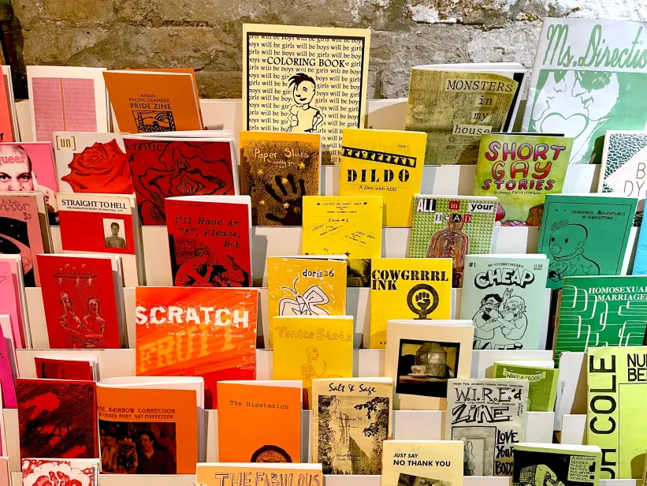
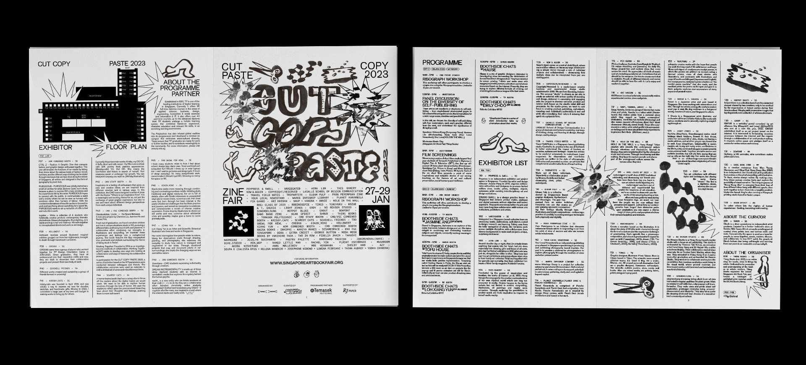
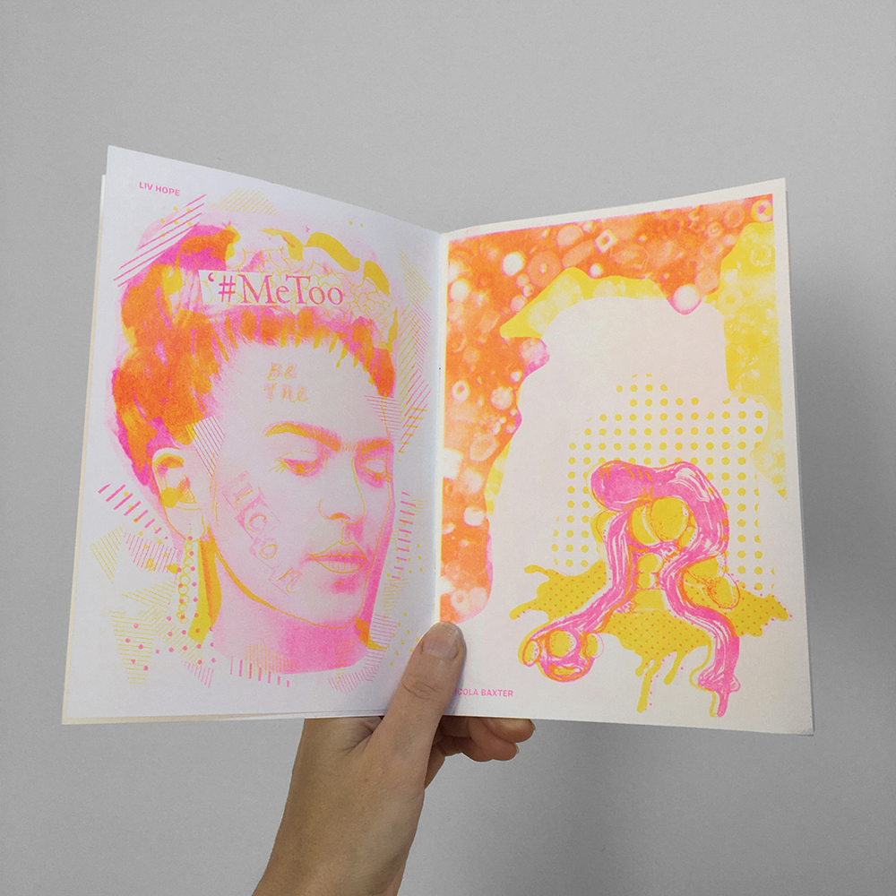

EXAMPLE 01
QZAP • ZINE ARCHIVE
QZAP stands for the Queer Zine Archive Project. It is an online archive dedicated to preserving queer zines and making them accessible to researchers, historians, artists, punks, and people interested in independent publishing and underground queer communities.

Visit QZAP • Zine ArchiveEXAMPLE 02
CUT, COPY, PASTE
This Singapore Art Book Fair identity uses crayon marks, paper cut-outs, and scanner noise across posters and web content. The designer describes the low-budget, handmade process as part of the identity.

View The ProjectEXAMPLE 03
RIGHT HERE, RIGHT NOW
This digital zine project turns young people's writing, drawings, video, and audio into a browsable website. The page structure acts like a contemporary archive of a community-made publication.

View The PaperRhino PortfolioROUGH BY CHOICE
CLEAR BY DESIGN
WHEN IT WORKS
The photocopy language works when a project needs to feel personal, urgent, independent, or connected to music, art, and community. Repeated type, visible layers, and imperfect alignment make the page feel made by a person rather than generated from a corporate template. A strong reading order still helps visitors understand the content.
WHEN IT DOES NOT
The style can become tiring when every element competes for attention. Small type, low contrast, and chaotic navigation can make a page difficult to use, especially for readers with low vision or people navigating by keyboard. Photocopy texture can also reduce legibility if it sits behind long paragraphs. The visual noise should stay in the composition, not obscure the information.